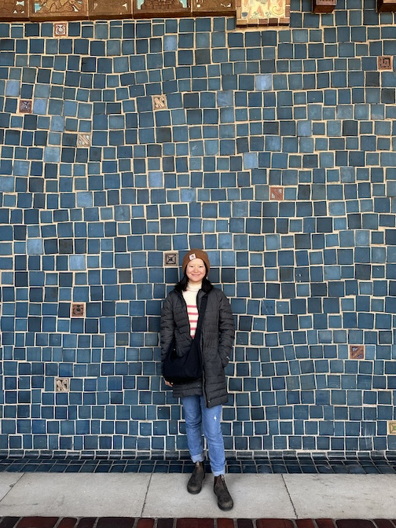

Hi! I'm Dottie.
I enjoy using my background in human-centered design to combine systems-level thinking, creativity, and data to solve complex challenges. My work focuses on the relationship between information, technology, and people and how we can bridge the gaps in between. With a strong foundation in human-computer interaction design, I am currently helping build and maintain a scalable, enterprise-level design system. Skilled in cross-team collaboration, Agile methodology, and project management.
I hold a B.S. and M.S. from the University of North Carolina at Chapel Hill in Information Science and a B.A. in French. Continuing to further my education as a 2nd year PhD student studying the sociotechnical implications of AI.

I hold a diverse background in industries, ranging from healthcare, education technology, and R1 research institutions.
Contact me on LinkedIn.